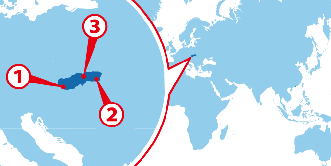
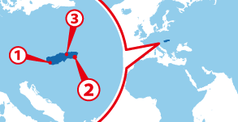

Praha
Praha Brno
Brno Ostrava
Ostrava
協定国一覧へ戻る

ワーホリ協定国一覧へ戻る

チェコ人気都市 BEST3
チェコ基本情報
| 首都 | Praha |
|---|---|
| 言語 | Czech |
| 面積 | 78,866km2;（九州と同じくらい） |
| 人口 | 約10,369,000人（79位） |
| 通貨 | チェコ・コルナ(CZK) |
＊2014 年10 月時点の数値です
| 日本時間 | Praha |
|---|---|
 1月1日 09:00am |
 1月1日 02:00am |
＊サマータイムの期間は時差が変動します
| 首都 | Praha |
|---|---|
| 面積 | 78,866km2;（九州と同じくらい） |
| 人口 | 約10,369,000人（79位） |
| 言語 | Czech |
|---|---|
| 通貨 | チェコ・コルナ(CZK) |
＊2014 年10 月時点の数値です |
|
日本との時差
| 日本時間 | Praha |
|---|---|
|
1月1日 09:00am |
1月1日 02:00am |
＊サマータイムの期間は時差が変動します
チェコってどんな国？
チェコはヨーロッパの中心に位置し、ドイツ・オーストリア・ポーランド・スロバキアの4カ国に囲まれた内陸国だ。チェコの地形は変化に富んでおり、西に隣接するドイツとの国境線から東のスロバキアまで広がるボヘミア高原は、ボヘミアの森と呼ばれる広大な森林におおわれている。
チェコの首都プラハは「百塔の街」「建築博物館の街」「ヨーロッパの魔法の都」「北のローマ」など数多くの異名を持ち、絵本のように美しい中世ヨーロッパの街並みがそのままの姿で残されていることで有名だ。世界を旅した人に、どの街が一番美しかったかを聞くと「プラハ」と答える方がとても多いと言われており、どこを切り取っても絵になる街を歩くだけでもタイムスリップしたような感覚を味わうことが出来るだろう。
「チェコの特産品は何か」と聞かれれば、「ビール」と「ボヘミアンガラス」の２つが挙げられる。特にチェコはビールの国民一人当たりの年間消費量が世界一位と言われており、コーラや水よりもビールが安く販売されている。ビール工場も数多く点在しているので、ビール好きな人はそれらを巡るツアーに参加してみてはどうだろうか。
チェコは元々ハンガリーの一部であり、「上部ハンガリー」と呼ばれていた。しかし18世紀に同じくハンガリーの一部だった東隣のスロバキア共和国と統合され「チェコスロバキア連邦共和国」となり、その後改めて分離したことで現在の「チェコ共和国」という形になった。元々ハンガリーの一部だったこともあり、今もなおハンガリーの文化が根強く残っている。
ドイツからも大きな影響を受けており、チェコではドイツ料理に近い肉料理がメインで食べられている。魚も食べられているが、内陸国なので魚料理は淡水魚が中心となっている。
チェコも日本と同じく1年を通して四季がある国。夏は梅雨こそないものの気温が30度を超えることがあり、一方で冬はマイナスまで落ち込み、雪が積もることも多い。春と秋の季節がしっかりしているため、お花見や紅葉狩りなどを楽しむこともできるだろう。
チェコの公用語はチェコ語。スロバキア語に似ており、チェコ語とスロバキア語で会話が成り立つこともあるとか。チェコにワーキングホリデーする際は、英語だけでなくチェコ語の習得が必須となるだろう。
▼▼▼まずは無料セミナーへ！ワーキングホリデー＆留学の無料セミナーはこちら！▼▼▼
アイルランドの
ビザ情報はこちらから
ビザ情報はこちらから
まずは無料セミナーへ！
ワーキングホリデー＆留学の無料セミナーはこちら！
ワーキングホリデー＆留学の無料セミナーはこちら！